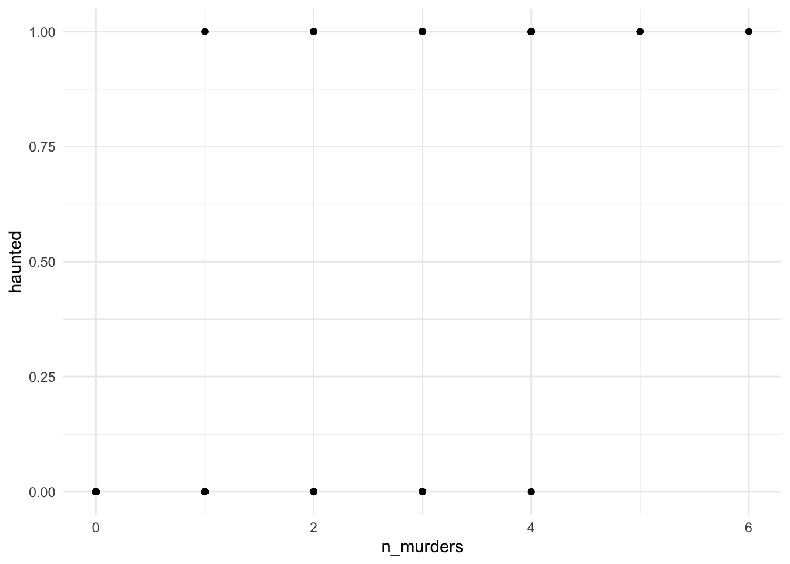

Ok lets try to imagine Port A is now facing a ghost epidemic - what’s the probability that your in a haunted house? Well we can use house hauntings as a binary outcome and model them as a function of some predictor. Likely, the most important thing influencing ghosts is the number of murders which have occurred in that house - so let’s use that as our predictor.
Well this is probably an overesimate, but I’m simulating murders per house from a poisson distribution with a mean rate of 2/house. Let’s say it’s not Port A, but a particularly spooky town.
set.seed(1031)library(ggplot2) |>suppressMessages()library(bayesplot) |>suppressMessages()library(rstan) |>suppressMessages()library(ggpubr) |>suppressMessages()rm(list =ls())source('../R/utils.R') |>suppressMessages() #note path#### Simulating Ghost probabilities #########n_houses <-200#number of houses to hauntn_murders <-rpois(n_houses, 2) # mean 2 murders per housebeta_0 <--5beta_1 <-2p_ghost <-1/ (1+exp(-(beta_0 + beta_1 * n_murders)))# Simulate presence/absence datahaunted <-rbinom(n_houses, size =1, prob = p_ghost)ggplot() +geom_point(aes(x = n_murders, y = haunted)) +theme_minimal()

The above plot shows us the number of murders per house predicting if a house is haunted (1) or not (0).
The event of a house being haunted is a binary outcome \(y_i\). The probability it is haunted can be defined as \(\psi\). We then can use a logistic regression to predict the probability for each house, where \(m_i\) is the number of murders in house \(i\)
data {
int<lower=0> N;
array[N] int<lower=0, upper=1> y;
vector[N] x;
}
parameters {
real beta_0;
real beta_1;
}
model {
// Priors
beta_0 ~ normal(0, 5);
beta_1 ~ normal(0, 2);
// Likelihood
y ~ bernoulli_logit(beta_0 + beta_1 * x);
}
\- Prep for Stan -----------ghost_data <-list(N = n_houses,y = haunted,x = n_murders)ghost_fit <-stan('./stan/ex04_simple-ghosts.stan','gfit',data = ghost_data,iter =5000, warmup =1000, cores =10)ghost_fit
Inference for Stan model: gfit.
4 chains, each with iter=5000; warmup=1000; thin=1;
post-warmup draws per chain=4000, total post-warmup draws=16000.
mean se_mean sd 2.5% 25% 50% 75% 97.5% n_eff Rhat
beta_0 -5.36 0.01 0.71 -6.83 -5.82 -5.33 -4.86 -4.06 3211 1
beta_1 2.13 0.01 0.30 1.59 1.92 2.12 2.32 2.75 3143 1
lp__ -66.02 0.02 1.00 -68.68 -66.42 -65.71 -65.30 -65.04 3982 1
Samples were drawn using NUTS(diag_e) at Thu Oct 31 11:06:20 2024.
For each parameter, n_eff is a crude measure of effective sample size,
and Rhat is the potential scale reduction factor on split chains (at
convergence, Rhat=1).
Now we can predict the probability a house is haunted based and compare it to our observed data:
The previous example, once again is pretty unrealistic. Just because a ghost is there, you probably wouldn’t see them. Ghosts by definition are pretty ellusive.
So there’s 200 houses - and let’s say that they are all worried there’s a ghost in them. So they hire mediums to come a check it out. However, mediums may also struggle to identify a house - some houses are more clairvoyant (I googled this term) which means they are easier to connect to the spirit world in this setting. The paranomal researchers might take issue with the belief that people are clairvoyant not houses, but I’m setting the clairvoyance at the location. It’s all made up anyways.
So even if a ghost is there, it may not be detected. Now some houses were able to afford multiple medium visits to try and contact a ghost but not all. Let’s model this whole system.
I’ve created a clvoy variable to be clairvoyance, which is pretty variable across houses. Then I calculate the true occupancy probability based on number of murders, we randomly simulate the number of visits per house. Each house has a probability of seeing a ghost, which is a function of its clairvoyance.
Looking just at the raw data, we can tell it would be hard to extract a true relationship betweeen our variables. But we can model the two processes to tease apart this relationship
For fun, I set a really stronger prior indicating a lack of belief in ghosts in the \(\beta_0\) prior.
data {
int<lower=0> N; //houses
array[N] int<lower=0> v; // visits
array[N] int<lower=0> detections;
vector[N] x;
vector[N] c;
}
parameters {
real beta_0;
real beta_1;
real alpha_0;
real alpha_1;
}
transformed parameters {
array[N] real p;
array[N] real psi;
for(i in 1:N) {
p[i] = inv_logit(alpha_0 + alpha_1 * c[i]);
psi[i] = inv_logit(beta_0 + beta_1 * x[i]);
}
}
model {
// Priors
beta_0 ~ normal(-10, 3);
beta_1 ~ normal(0, 2);
alpha_0 ~ normal(0, 10);
alpha_1 ~ normal(0, 2);
for (i in 1:N) {
detections[i] ~ binomial(v[i], p[i] * psi[i]);
}
}
One thing worth noting here, I still don’t scale my data. If you are fitting multiple predictors, with different scales, scaling is a good idea. However, since the predictors are for different sub-models it is ok.
detection_data <-list(N = n_houses,v = n_visits,occupancy = occupancy,detections =apply(detected, 1, sum, na.rm = T),x = n_murders,c = clvoy)detection_fit <-stan('./stan/ex04_occupancy-ghosts.stan','occ-mod',data = detection_data,iter =4000, warmup =1000, cores =10,thin =10# it was slow since it estimates every individual p/psi)detection_fit
In the above figure, I overlayed real ghosts as red points and the observations at black points. We can see our model does a good job capturing the true relationship here!
We also can look at the effect of clairvoyance on ghost detection.
This was a pretty basic case of an occupancy model, but it shows how we can use Bayesian inference to model different aspects of a system AND fill in data for points where we may have less observations. This can be expanded to have spatial compontent for unobserved areas or even include false positives (great for eDNA!)